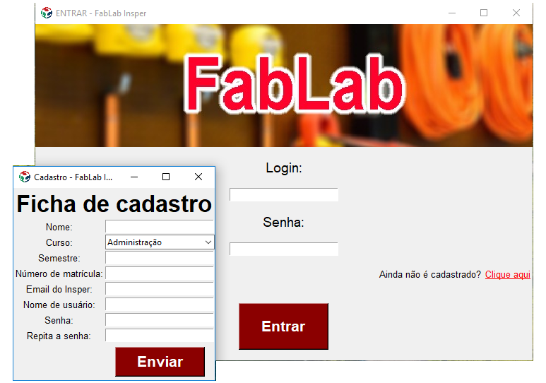

Design de Software - Professor Romero T.
Os alunos foram encorajados a seguir adiante e aprenderem módulos em Python para a realização do projeto 3 e, o tema era livre, desde que utilizasse ao menos 1 biblioteca indicada pelos professores. Entre elas, havia módulos para interface gráfica e elaboração de jogos.
O projeto final de Design de Software tinha por objetivo central estimularem os alunos a irem além do conteúdo trabalhado em aula, ou seja, seguir adiante no aprendizado da linguagem de programação Python. Módulos extras do próprio Python deveriam ser explorados pelos alunos para a realização desse projeto, além, é claro, da utilização de recursos já aprendidos em aula.
Chegado ao fim da implementação, o aplicativo consistia numa janela da qual o usuário poderia navegar entre seções. O usuário, após fazer LogIn, poderia agendar ou desmarcar horários, ver guias rápidos de instruções de uso das ferramentas do FabLab, consultar seu histórico de agendamento, além de poder visualizar um calendário contendo todas as atividades já marcadas no Laboratório, sendo todas essas funcionalidades integradas a um banco de dados Online.
Voltar